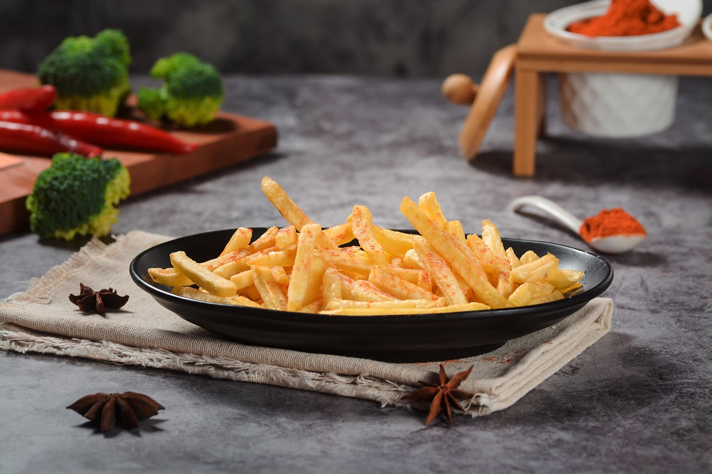

French Fries Recipe:
Click here to navigate Back to Index Page

The above is a image of the dish French-Fries.
It's a very popular dish made from boiled potatoes
It is best served hot with mayo and tomato ketchup
Ingredients
- Potatoes
- Cooking oil (vegetable or sunflower)
- Salt
- Cold water
Steps
- Peel the potatoes and cut them into thin, even strips.
- Rinse the strips in cold water to remove excess starch, then soak them for 20 - 30 minutes.
- Drain and pat the potatoes completely dry using a clean cloth or paper towel.
- Heat oil in a deep pan on medium heat and fry the potatoes until they are soft but not browned (about 3 - 4 minutes).
Remove and let them rest for a few minutes.
- Increase the oil heat and fry the potatoes again until golden and crispy.
- Remove from oil, drain excess oil, sprinkle salt, and serve hot.